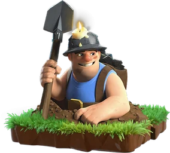

Miner — Clash of Clans
Updated: 26 August 2026 · By the Goblins Farm team
Miners travel underground and cannot be targeted while doing so, surfacing next to their target, attacking, then burrowing again. They ignore walls without flying, which makes them the answer to bases built specifically to stop air.
- Housing space
- 6
- Levels
- 12
- Trained in
- Barracks
- Targets
- Ground only
- Attack speed
- 1.7s
- Range
- 0.6 tiles
- Role
- Elixir troop
- Movement
- Ground, tunnels
What it does
Miners tunnel between targets. While underground they are untargetable, so defences cannot damage them in transit, and walls do not affect their path at all. They surface, attack, and burrow again toward the next nearest building.
Functionally this gives them the wall-ignoring property of air troops while remaining ground units, meaning Air Defences cannot touch them either. What they lack is hitpoints once surfaced.
How to use it
Miners work as a mass, moving through a base in a wave.
- Deploy them as a group along one side so they surface together and overwhelm the defences in one compartment at a time.
- Bring healing. Miners take damage in bursts when surfaced, and healing keeps the wave alive through the middle of the base, which is where attacks with them are won or lost.
- Ignore the layout. Unlike almost every other ground army, you do not need to plan around compartments. Plan around where the splash damage is.
How to beat it
Splash damage placed centrally, plus traps that catch ground troops as they surface. Because Miners ignore walls, a compartmented base offers little resistance, so the defensive answer is damage rather than geometry. Defences that hit hard in an area where Miners must surface are the practical counter.
Stats by level
| Level | Hitpoints | DPS | Research cost | Research time | Town Hall |
|---|---|---|---|---|---|
| 1 | 550 | 80 | — | — | 10 |
| 2 | 610 | 88 | 1,500,000 Elixir | 1 d | 10 |
| 3 | 670 | 96 | 2,600,000 Elixir | 2 d | 10 |
| 4 | 730 | 104 | 3,000,000 Elixir | 2 d 6 h | 11 |
| 5 | 800 | 112 | 4,000,000 Elixir | 2 d 12 h | 11 |
| 6 | 900 | 120 | 4,800,000 Elixir | 3 d | 12 |
| 7 | 1,000 | 128 | 6,000,000 Elixir | 4 d | 13 |
| 8 | 1,150 | 136 | 8,600,000 Elixir | 6 d | 14 |
| 9 | 1,350 | 144 | 10,500,000 Elixir | 6 d 12 h | 15 |
| 10 | 1,550 | 160 | 12,500,000 Elixir | 7 d | 16 |
| 11 | 1,750 | 175 | 16,500,000 Elixir | 9 d 12 h | 17 |
| 12 | 2,050 | 195 | 28,000,000 Elixir | 14 d 12 h | 18 |
Where these numbers come from. Read from Clash of Clans' own game files, client build 18.400.21. They are exact for that build and do not reflect anything released after it, so verify in game before committing an upgrade.
Game values are read from Supercell's own game files, reproduced as fan content under Supercell's Fan Content Policy. Goblins Farm is not affiliated with, endorsed, sponsored, or specifically approved by Supercell, and Supercell is not responsible for it.
Frequently asked
Can Miners be attacked while underground?
No. Miners are untargetable while tunnelling and can only be damaged once they surface to attack. That is what lets them cross a base that would shred an ordinary ground army.
Do walls stop Miners?
Not at all. Miners tunnel under walls entirely, which makes heavily compartmented bases a poor defence against them. Splash damage placed where they must surface is the real counter.
Goblins Farm is not affiliated with, endorsed by, sponsored by, or specifically approved by Supercell. Clash of Clans is a trademark of Supercell Oy. This material is unofficial fan content produced under Supercell's Fan Content Policy. Game values change with every update; always verify in-game before committing an upgrade.